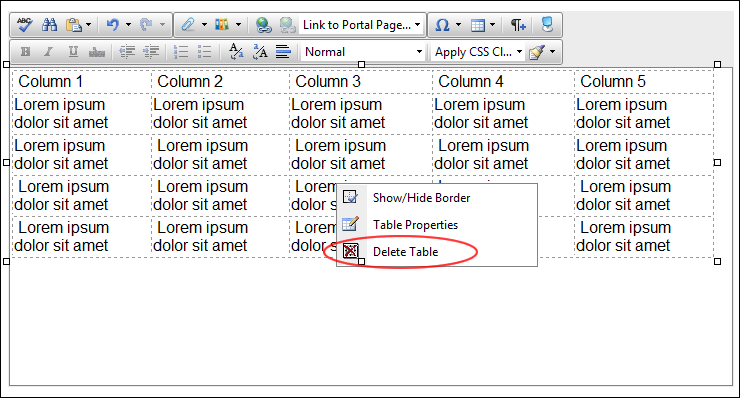

Deleting a Table
How to delete a table from the DotNetNuke.RadEditorProvider for the RTE.
Option One:
- Click on the corner of the table to select it.
- Strike the Delete button on your keyboard.
Option Two:
- Click on the corner of the table to select it.
- Click on the corner of the table to select it. and select Delete Table from the drop down list.

Option Three:
- Place your cursor before or after the table.
- Strike either the Backspace or Delete button on your keyboard respectively.